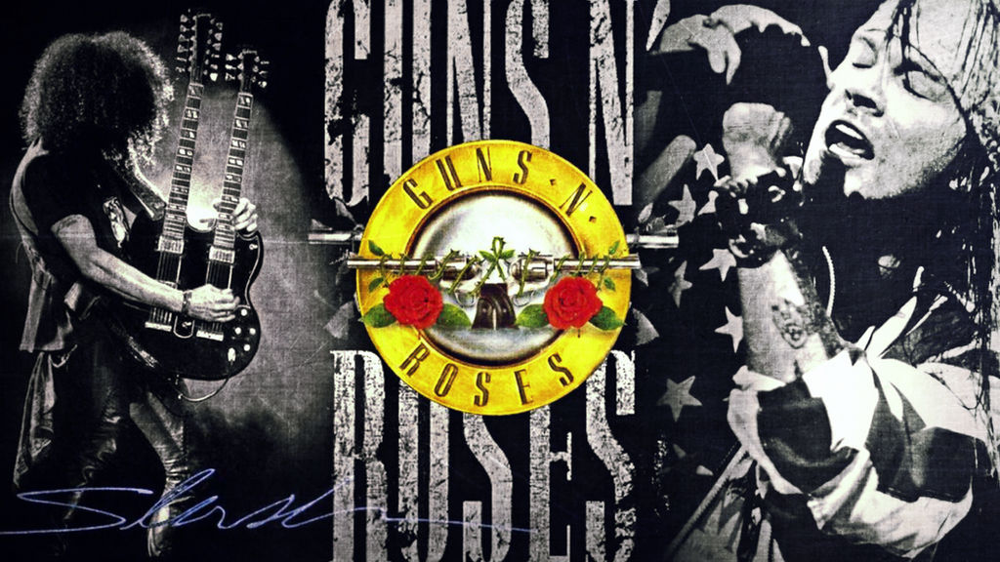
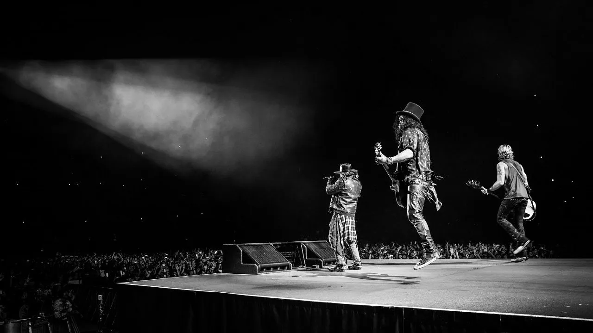

Photo Gallery



Guns N' Roses adalah band rock Amerika yang terbentuk di Los Angeles pada tahun 1985. Mereka dikenal karena gaya musik yang energik, lirik yang provokatif, serta gaya panggung yang liar. Band ini didirikan oleh vokalis Axl Rose, gitaris Slash, gitaris Izzy Stradlin, bassis Duff McKagan, dan drummer Steven Adler. Guns N' Roses mencapai kesuksesan besar pada akhir 1980-an dan awal 1990-an dengan album-album seperti "Appetite for Destruction" (1987) yang menjadi salah satu album terlaris sepanjang masa. Lagu-lagu hits mereka seperti "Sweet Child o' Mine", "Paradise City", dan "Welcome to the Jungle" menjadi anthem bagi generasi rock di seluruh dunia. Namun, keberhasilan band ini disertai dengan kontroversi dan ketegangan internal. Konflik antar anggota, ketergantungan obat-obatan, dan perilaku merusak citra membuat Guns N' Roses sering kali menjadi sorotan media. Pada tahun 1990-an, kelompok ini mengalami pergantian anggota dan beberapa kali bubar. Meskipun demikian, Guns N' Roses tetap memiliki basis penggemar yang kuat dan kesetiaan dari para penggemar musik rock. Mereka melakukan reuni pada tahun 2016 dengan formasi yang sebagian besar asli dan melanjutkan tur dunia yang sukses. Gaya musik mereka yang unik dan aura kontroversi telah menjadikan mereka salah satu band rock paling ikonik sepanjang masa.